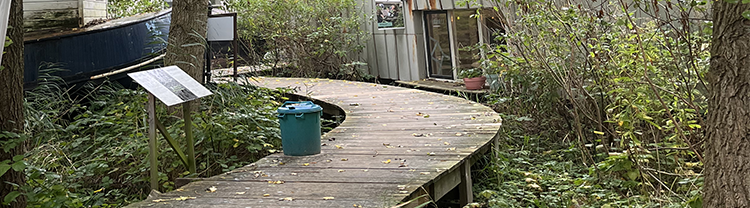
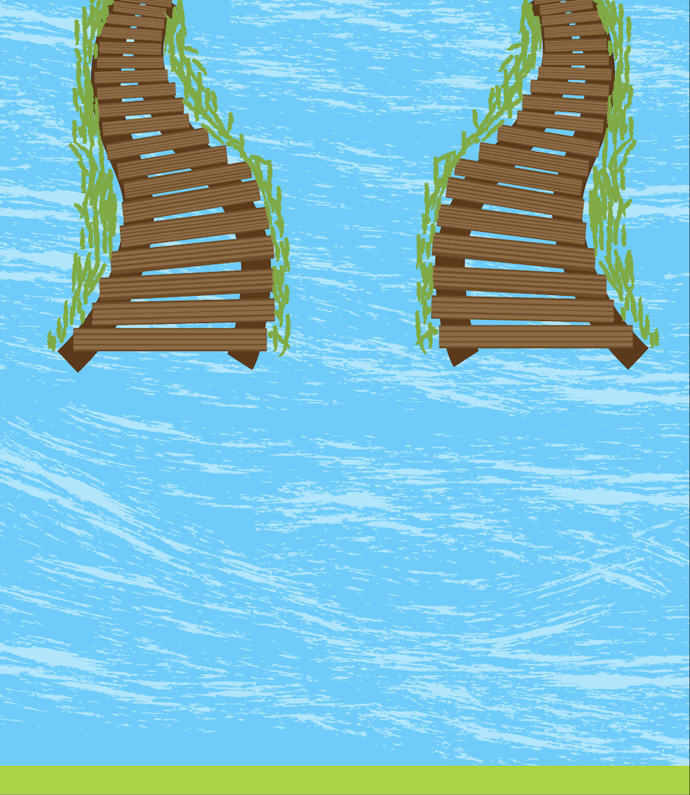

Omgeving

De omgeving is een groene plek in Amsterdam-Noord, waar natuur en creativiteit elkaar ontmoeten. Gelegen aan het water, het was vroeger een scheepswerf en nu is het een unieke locatie voor duurzame projecten. Het is een plek waar lokale initiatieven groeien en de toekomst van duurzaamheid in de praktijk wordt gebracht
Oude gebouwen zijn hergebruikt, ze werken daar met groene energie en water wordt slim beheert. Groene tuinen zorgen voor meer biodiversiteit en alles wat ze gebruiken is lokaal en biologisch. Erg duurzaam op een leuke en slimme manier.